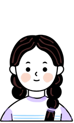

<!DOCTYPE html>
<html>

<head>
    <title>My experiment</title>
    <script src="jatos.js"></script>
    <script src="jspsych/dist/jspsych.js"></script>
    <script src="jspsych/dist/plugin-html-keyboard-response.js"></script>
    <script src="jspsych/dist/plugin-html-button-response.js"></script>
    <script src="jspsych/dist/plugin-audio-keyboard-response.js"></script>
    <script src="jspsych/dist/plugin-preload.js"></script>
    <script src="jspsych/dist/plugin-instructions.js"></script>
    <script src="scripts/util.js"></script>
    <link href="jspsych/dist/jspsych.css" rel="stylesheet" type="text/css" />
    <link href="stylesheet/stylesheet.css" rel="stylesheet" type="text/css" />
</head>

<body>
</body>
<script>


    var jsPsych = initJsPsych({
        //on_trial_start: jatos.addAbortButton,
        on_finish: () => jatos.startNextComponent(jsPsych.data.get().json())
    });

    //var jsPsych = initJsPsych();

    timeline = []

    // Screen 1: Welcome block

    var welcome_block = {
        type: jsPsychHtmlButtonResponse,
        stimulus: '<p>Start the experiment</p>',
        choices: ['Next'],
        record_data: false,
    };
    timeline.push(welcome_block);

    // screen 2: Informant

    const informat_html = `<div id="choose-container" style="display:flex;gap:60px;justify-content:center;align-items:center">
      <div style="text-align:center">
        
      </div>
      <div style="text-align:center">
        
      </div>
    </div>`;

    var informat_main = {
        type: jsPsychHtmlKeyboardResponse,
        stimulus: informat_html,
        choices: "NO_KEYS",
        on_load: Informant_intro_people,
        record_data: false,
    };
    timeline.push(informat_main);

    var informat_end = {
        type: jsPsychHtmlButtonResponse,
        stimulus: informat_html,
        choices: ['Next'],
        response_ends_trial: true,
        record_data: false,

    };
    timeline.push(informat_end);

    // Screen 3: Comprehension check


    const compCheckParams = {
        "grownup": 'assets/Experimenter voice recordings/informant_intro/exp_grown_up_compre_jb.wav',
        "kid": 'assets/Experimenter voice recordings/informant_intro/exp_kid_compre_2_jb.wav',
    };


    for (let informant in compCheckParams) {
        timeline.push({
            type: jsPsychHtmlKeyboardResponse,
            stimulus: informat_html,
            choices: "NO_KEYS",
            on_load: function () { comp_check_load(informant, compCheckParams[informant]); }

        });
    }


    console.log('built timeline:', timeline);
    jatos.onLoad(() => {
		var id = jatos.urlQueryParameters.id;
				console.log(id);
		var order_teach = jatos.urlQueryParameters.order_teach;
				console.log("Order Teach received: " + order_teach);
        jsPsych.run(timeline);
    });
    //jsPsych.run(timeline);

</script>

</html>